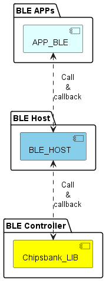

SDK Components
Component level view of SDK (CPU Subsystem)
![package "SYSTEM APPs" {
[APP_SYS_UART_COMMANDER]
[APP_SYS_IRQ_CALLBACK]
}
package "CPU APPs" {
[APP_CPU_UART] #lightyellow
[APP_CPU_TIMER] #lightyellow
[APP_CPU_GPIO] #lightyellow
[APP_CPU_SLEEP] #lightyellow
[APP_CPU_WDT] #lightyellow
}
package "CB LIB" {
[Chipsbank_LIB] #yellow
}
[APP_SYS_UART_COMMANDER] ..> [APP_CPU_UART]
[APP_SYS_IRQ_CALLBACK] <..> [APP_CPU_TIMER]: Register & Execute\ncallback
[APP_SYS_IRQ_CALLBACK] <..> [APP_CPU_GPIO]: Register & Execute\ncallback
[APP_SYS_IRQ_CALLBACK] <..> [APP_CPU_SLEEP]: Register & Execute\ncallback
[APP_SYS_IRQ_CALLBACK] <.. [Chipsbank_LIB]: IRQ\noccurred
[APP_CPU_UART] ..> [Chipsbank_LIB]
[APP_CPU_TIMER] ..> [Chipsbank_LIB]
[APP_CPU_GPIO] ..> [Chipsbank_LIB]
[APP_CPU_SLEEP] ..> [Chipsbank_LIB]](../_images/plantuml-43836cb1223a437c0a854f99991e723c111e6709.png)
Component level view of SDK (UWB)
![package "SYSTEM APPs" {
[APP_SYS_IRQ_CALLBACK]
}
package "UWB APPs" {
[APP_UWB_COMMTRX] #lightcyan
[APP_UWB_PDOA] #lightcyan
[APP_UWB_AOA] #lightcyan
[APP_UWB_DSTWR] #lightcyan
[APP_UWB_RXPER] #lightcyan
[APP_UWB_RNGAOA] #lightcyan
}
package "CB LIB" {
[Chipsbank_LIB] #yellow
}
[APP_SYS_IRQ_CALLBACK] <..> [APP_UWB_COMMTRX]: Register & Execute\ncallback
[APP_SYS_IRQ_CALLBACK] <..> [APP_UWB_AOA]: Register & Execute\ncallback
[APP_SYS_IRQ_CALLBACK] <..> [APP_UWB_DSTWR]: Register & Execute\ncallback
[APP_SYS_IRQ_CALLBACK] <..> [APP_UWB_PDOA]: Register & Execute\ncallback
[APP_SYS_IRQ_CALLBACK] <.. [Chipsbank_LIB]: IRQ\noccurred
[APP_UWB_COMMTRX] ..> [Chipsbank_LIB]
[APP_UWB_PDOA] ..> [Chipsbank_LIB]
[APP_UWB_AOA] ..> [Chipsbank_LIB]
[APP_UWB_DSTWR] ..> [Chipsbank_LIB]](../_images/plantuml-4bcf560f3e433d0deacec6f01404ee27aff7ffa1.png)
Component level view of SDK (BLE)

Tip
The diagram offers a visual representation of the software architecture within a system, showcasing various software modules grouped into distinct packages. Each package serves as a container for logically related functionalities and services, contributing to the overall functionality and operation of the system.
APP_SYS_UART_COMMANDER: Designed to manage all UART-related operations within the system. It’s responsible for receiving incoming commands and their associated parameters, then executing these commands accordingly.
APP_SYS_IRQ_CALLBACK: Serving a critical role in system-wide event handling, this module facilitates the registration and execution of interrupt service routines (ISRs). Multiple applications could therefore share the same ISR, and the registered function pointer will be invoked upon an IRQ occurrence.
APP_CPU_SLEEP: This application manages the SLEEP mode functionality.
APP_CPU_UART: This application is responsible for managing UART communication and also includes an API for debug printing.
APP_CPU_TIMER: This application manages TIMER modules within the CPU subsystem. There are four configurable timers, and each timer can have up to four timer events.
APP_CPU_GPIO: This application manages GPIO operations such as setting, reading, and handling IO interrupts.
APP_CPU_WDT: This application manages the Watchdog Timer (WDT) operations such as setting up the watchdog, resetting it, and handling watchdog interrupts.
APP_UWB_COMMTRX: Focused on UWB communication tasks, this module facilitates data transmission and reception over UWB channels.
APP_UWB_PDOA: Specializing in UWB-based Positioning and Direction of Arrival (PDOA) functionalities, this module offers capabilities for determining the spatial location and direction of UWB-enabled devices within the system’s vicinity.
APP_UWB_AOA: This application uses the PDOA functionality to calculate the Angle of Arrival (AOA) and derive the angle of the UWB sender with respect to the receiver.
APP_UWB_DSTWR: This application demonstrates the Double-Sided Two-Way Ranging (DSTWR) functionality. This module uses the Time of Flight (ToF) of UWB packets to determine the distance between two UWB devices.
APP_UWB_RNGAOA: This function executes the UWB ranging and AOA (Angle of Arrival) measurement process. It initializes the necessary configurations, synchronizes with the responder or initiator, and performs the double-sided two-way ranging (DSTWR) operation. After the DSTWR operation, it performs Phase Difference of Arrival (PDOA) calculations followed by AOA computations. Throughout the process, it logs the results and relevant status information. Once the measurement is complete, it outputs the distance and angle data.
图表提供了系统内软件架构的视觉表示，展示了分组为不同包的各种软件模块。每个包都充当逻辑相关功能和服务的容器，有助于系统的整体功能和操作。
设计用于管理系统内的所有UART相关操作。它负责接收传入的命令及其相关参数，然后相应地执行这些命令。
在系统范围的事件处理中发挥着至关重要的作用，该模块促进了中断服务程序（ISRs）的注册和执行。因此，多个应用程序可以共享同一个ISR，并且在发生中断请求时将调用已注册的函数指针。
这个应用程序管理睡眠模式功能。
这个应用程序负责管理UART通信，并且还包含用于调试打印的API。
这个应用程序管理CPU子系统内的定时器模块。系统中有四个可配置的定时器，每个定时器最多可以拥有四个定时器事件。
这个应用程序管理GPIO操作，例如设置、读取和处理IO中断。
这个应用程序管理看门狗定时器（WDT）操作，例如设置看门狗、复位看门狗以及处理看门狗中断。
专注于UWB通信任务，该模块促进了通过UWB信道的数据传输和接收。
该模块专门针对基于UWB的定位和到达方向（PDOA）功能，提供了确定系统范围内启用UWB的设备的空间位置和方向的能力。
该应用程序使用 (PDOA) 功能计算到达角 (AOA)，并得出 UWB 发送器相对于接收器的角度。
该应用演示了双面双向测距 (DSTWR) 功能。该模块使用 UWB 数据包的飞行时间 (ToF) 来确定两个 UWB 设备之间的距离。
该功能执行超宽带 (UWB) 测距和 AOA (到达角) 测量过程。它初始化必要配置，与响应者或发起者同步，并执行双向双程测距 (DSTWR) 操作。DSTWR 操作完成后，它执行到达相位差 (PDOA) 计算，然后进行 AOA 计算。在整个过程中，它记录结果和相关状态信息。测量完成后，它输出距离和角度数据